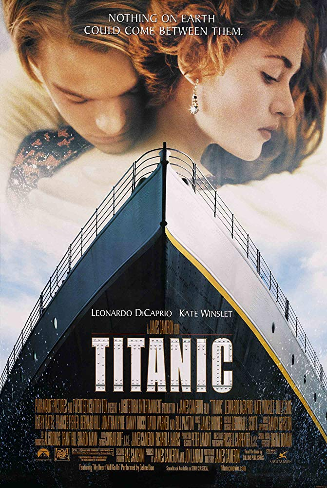
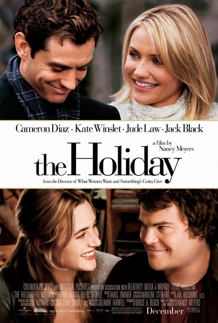

84 years later, a 100 year-old woman named Rose DeWitt Bukater tells the story to her granddaughter Lizzy Calvert, Brock Lovett, Lewis Bodine, Bobby Buell and Anatoly Mikailavich on the Keldysh about her life set in April 10th 1912, on a ship called Titanic when young Rose boards the departing ship with the upper-class passengers and her mother, Ruth DeWitt Bukater, and her fiancé, Caledon Hockley. Meanwhile, a drifter and artist named Jack Dawson and his best friend Fabrizio De Rossi win third-class tickets to the ship in a game. And she explains the whole story from departure until the death of Titanic on its first and last voyage April 15th, 1912 at 2:20 in the morning.
The movie starts in a nursing home with Duke reading to an older woman, whose memory is slipping from her more and more everyday. Duke reads the story of two lovers who meet in the south at a carnival. Allie was 17. A city girl from money, and Noah was a country boy. The two spend the whole summer together but Allie is forced to move and go to college although she was willing to give it up for Noah. Noah writes Allie 365 letters and she never gets them. So he restores the house him and Allie went to one night out of 'labor of love'. Seven years pass and Allie meets and falls in love with a wealthy soldier Lon. When seeing Noah's picture in the paper, Allie is drawn back to him. They spent a few days together and she doesn't want to leave. Allie has to choose between her fiancé and Noah.
A young woman with a mysterious past lands in Southport, North Carolina where her bond with a widower forces her to confront the dark secret that haunts her.

Two women troubled with guy-problems swap homes in each other's countries, where they each meet a local guy and fall in love.

South Carolina US Army Special operations soldier John is on summer leave from his German base, visiting his widowed father. Being gallant on the pier, he befriends college student Savannah, a college student, and her buddies, a terminal father and his angelic son. John falls in love with Savannah, who diagnoses his beloved, gentle but weird father as mildly autistic. He plans not to sign up again, but 9/11 changes that, and she won't wait idly while their friends desperately need help.
6. Beauty and the beast (2017)
7. Fifty shades(2010)
8. Dirty dancing (1987)
9. The last song(2010)
10. Letters to juliet(2010)
11. The best of me(2014)
12. A walk to remember (2002)